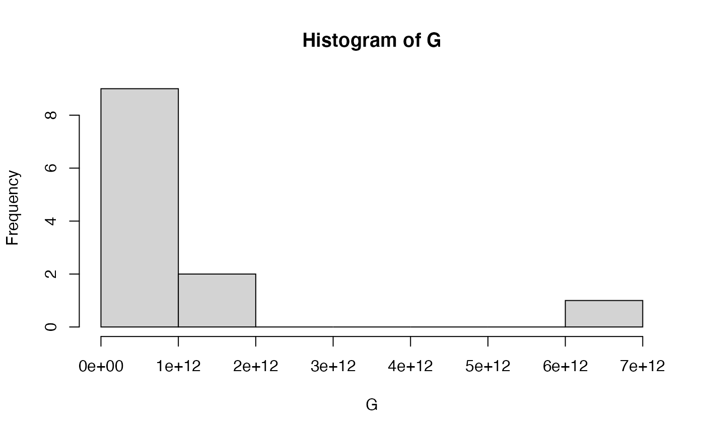
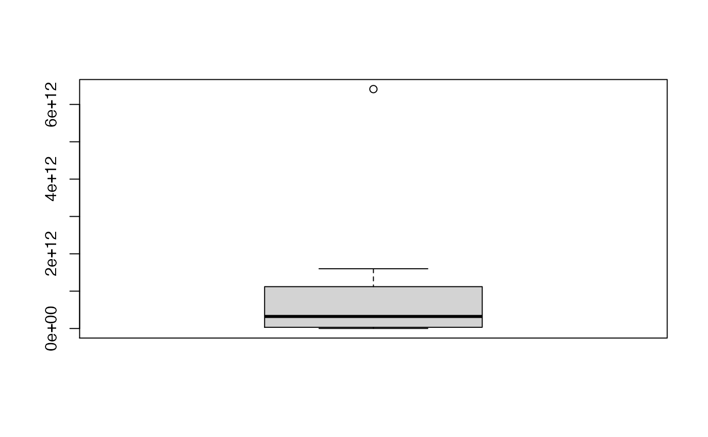
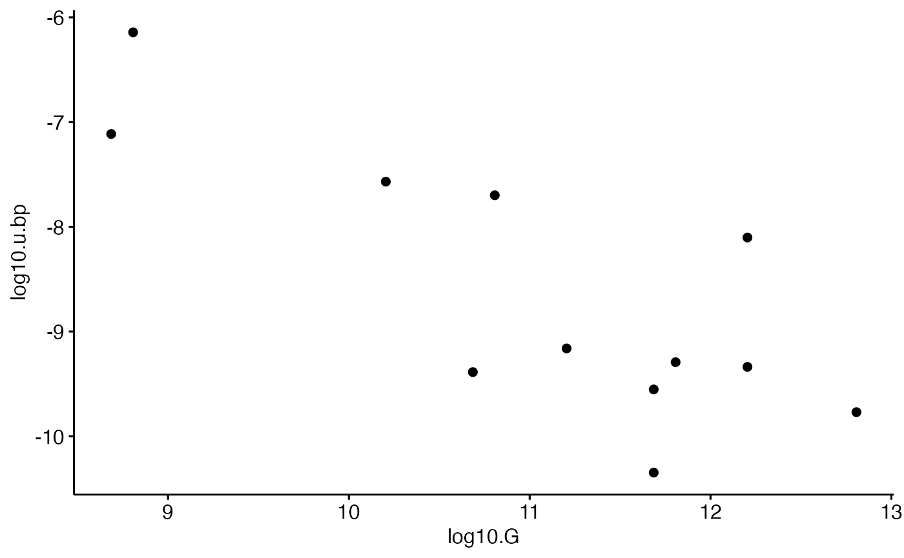
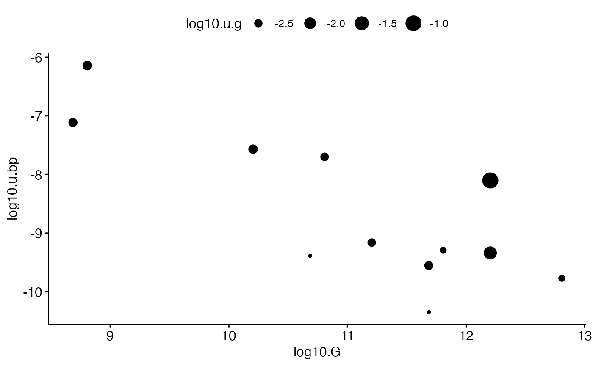
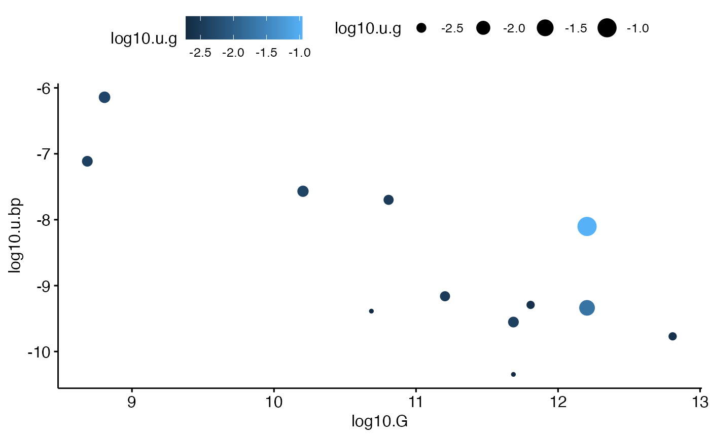
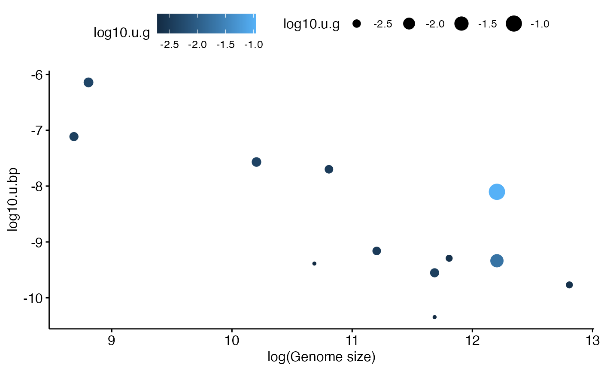
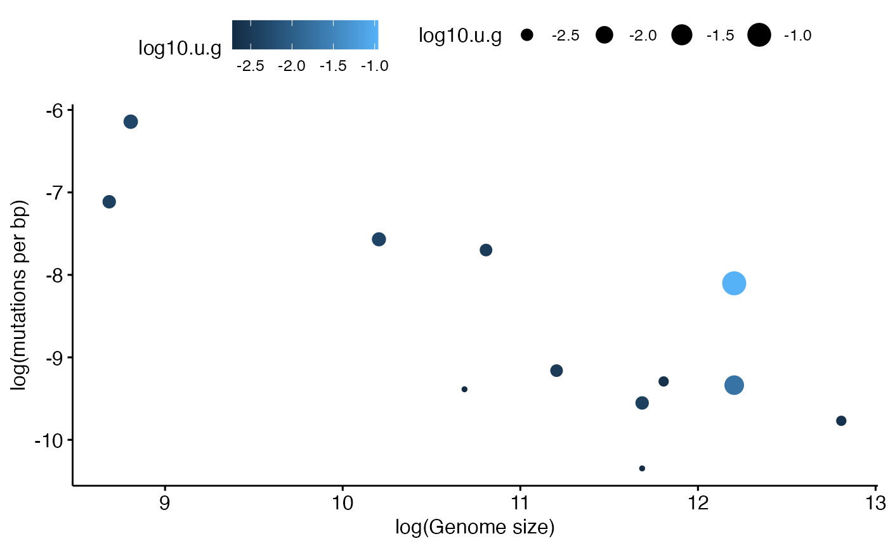
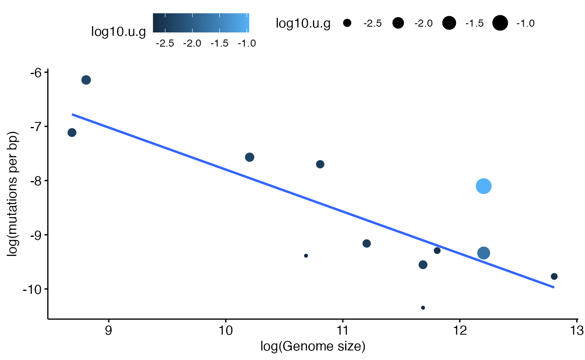
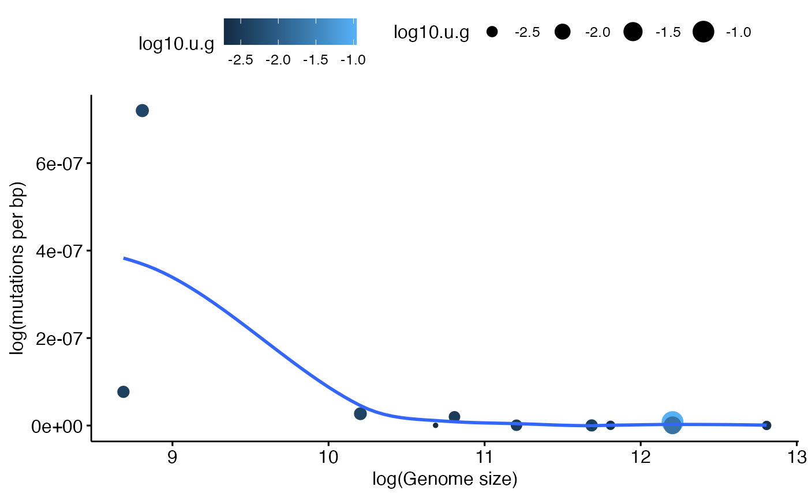
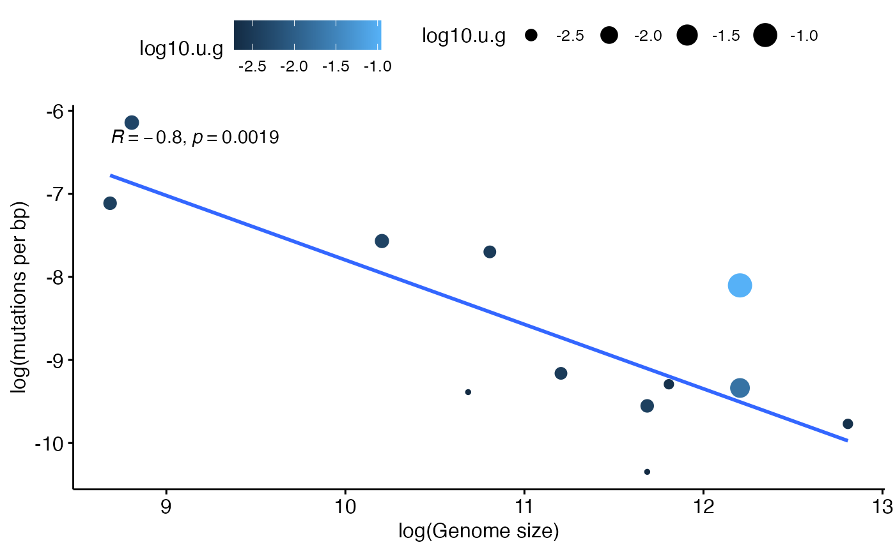

prog_data_frame_by_hand.Rmd
library(compbio4all)This exercise is meant to challenge you to build a dataframe by hand in R. It is based off of the Table 1 in Drake (1991) “A constant rate of spontaneous mutation in DNA-base microbes.”
There are two versions of this tutorial. This versions will guide you through the process of building the dataframe and exploring it. A second version is designed to challenge your understanding of the steps we went through.
a studnet noted on an earlier vs. of the assignment; feel free to take this approach when possible. I may modify the assignmnet in the future to reflect this approach
“I was finding the exponent notation” used in the assignment "tedious, so I tried what I’ve always done in other languages and it works. Other programmers might be more comfortable with this so it might be worth mentioning if we do more exercises with exponents:
Using “E” (or “e”) immediately after a number followed by the power work, and you only need to include sign if the notation is for a decimal (e.g. 1,000,000 can be represented by “1E6” and 0.01 by “1E-2”).
In the data frames exercise, the vector with numbers from the paper could’ve been done in one step like this: vector <- c(6.41E3, 4.85E4, 1.6E5…). I’m not sure if this would make more sense or be more efficient for others a well, but I personally prefer this style of notation."
For this you’ll need a copy of Drake (1991), which can be found at https://www.pnas.org/content/88/16/7160
We will focus on rebuiling Table 1 and Figure 1 entirely in R without importing the data from a spreadsheet.
Table 1 of Drake (1991) has the following columns. Note that the symbol mu (u) is frequently used to represent mutation rates.
The organism column has gaps in it because there are multiple target genes for these species
Note that the very last numbers that appear in the mutation columns are means, not data!
We can build up a dataframe in R by making a vector for each column. This is a bit tedious but will build up our skills, so be patient.
We can make a vector of organism names like this. We need to make sure each word representing an organisms is in quotes, and that there is a comma after each word.
org <- c("M13","lamb", "T2", "T4", "EC","EC","EC","SC","SC","SC","NC","NC")We can use line breaks while defining an R object, which can make it easier to keep track of what were typing. The following code is equivalent to what we just ran. Because there are multiple E. coli (EC) , SC and NC, I’m putting them on their own lines.
org <- c("M13", "lamb", "T2", "T4",
"EC", "EC", "EC",
"SC", "SC", "SC",
"NC","NC")If you want to be fancy, use rep() for the repeated (I will rarely do this in class though).
As always we need to check to make sure that the object we’re making is what we think it is and represents what we want. Use the following commands to check on the object:
Next let’s make the next vector. Below is the code you’ll need, but I’ve left off the last 3 numbers. Paste the code into the code chunk and add the necessary numbers from the original table. Don’t forget the commas. Also note that numbers don’t get quotes around them.
G.p <- c(6.41, 4.85, 1.60, 1.66, 4.70, 4.70, 4.70, 1.38, 1.38 )
# Run the code tomake the G.p vector here
# be sure to add the necessary numbersAgain, we explore this. Run these functions and note the output
# Type code to explore the G.p vector hereVectors in R have length, not dimension, so to see how big they are we use the length() command; dim() won’t work. Neither will ncol() or nrow().
All of our columns have the same number of elements in them. We can make sure we don’t have any errors in our data entry by using a logical operation, ==, to confirm that the length of each vector is the same. This is very useful when vectors are big and/or when we’re writing code to automate a process
First, check the length of one of the vectors
# Confirm the length of of one of the vectorsNext, run this code to check that the two lengths are the same: length(G.p) == length(org)
# Check that the lengths are the sameTo take the exponent of something in R use the up caret ^
So, if I want to type 1 million I can do this
1000000
#> [1] 1e+06or I can do this
1*10^6
#> [1] 1e+06Note that the output is in “e” notation. I could type this if I wanted
1e+06
#> [1] 1e+06In the chunk below, write a logical expression using == to confirm that 1000000 is equal to 1*10^6
To represent the genome size column I could do this (just showing first 3 numbers)
G.p <- c(6.41*10^5, 4.85*10^4, 1.60*10^5)However. when typing up this data I found it easier to break up the columns containing exponents into multiple columns, otherwise I was getting cross eyed.
One way to do this would be to split each number into what I’m calling a “prefix” and a “suffix”. Above we made a vector called G.p, which is the prefix of these numbers - the part before the multiplication symbol.
We can make another vector that contains the suffix - the 10^x part.
G.s <- c(10^3, 10^4, 10^5, 10^5, 10^6, 10^6, 10^6, 10^7, 10^7, 10^7, 10^7, 10^7)We can then multiple these together and get the value we want
G.p*G.s
#> [1] 6.41e+08 4.85e+08 1.60e+10 6.41e+10 4.85e+10 1.60e+11 6.41e+11 4.85e+11
#> [9] 1.60e+12 6.41e+12 4.85e+11 1.60e+12Note that this is doing is multiplying each element of G.p by the corresponding element of G.s. We could break this up like this
G.p[1]*G.s[1]
#> [1] 6.41e+08
G.p[2]*G.s[2]
#> [1] 4.85e+08This works pretty well, but I found typing all those exponents to still be a little annoying, especially since many get repeated. I think its easier to just type the exponent. We’ll call this object “G.exp” for exponent
G.exp <- c(3, 4, 5, 5, 6, 6, 6, 7, 7, 7, 7, 7)Again, if you want to be fancy you can play around with the rep() function, though this is optional
Now, to get the numbers we want, we can do this: G.p*10^G.exp Can you figure out what’s going on? If not, check the next chunk
Here I’ve added some parentheses to clarify the order of operations
G.p*(10^G.exp)
#> [1] 6.41e+08 4.85e+08 1.60e+10 6.41e+10 4.85e+10 1.60e+11 6.41e+11 4.85e+11
#> [9] 1.60e+12 6.41e+12 4.85e+11 1.60e+12If its still not clear, then maybe this will help:
G.s == 10^G.exp
#> [1] TRUE TRUE TRUE TRUE TRUE TRUE TRUE TRUE TRUE TRUE TRUE TRUELet’s make a final G vector with genome sizes. This is the “prefix” I made (G.p) multipled by 10 raised to the exponent I defined in the vector G.exp.
G <- G.p*(10^G.exp)We can make a basic plot showing the distribution of genome sizes using the histogram function in R, hist().
hist(G)
The far left value is 0e+00, which just means 0.0. The first tick mark is 1e+07. Write this out using an exponent symbol ^ below:
How do you interpret this graph? Ask you neighbor if they know. If you aren’t comfortable interpretting histograms see datavizcatalogue.com/methods/histogram.html and https://en.wikipedia.org/wiki/Histogram
Another way to look at this data would be with a boxplot
boxplot(G)
This is actually a realy ugly plot, but whatever.
hist() and boxplot() are great for quick and dirty plots. Normally though I’ll use ggpubr to make plots using gghistogram and ggboxplot
Next we have the per genome mutation rate. The “u” is a stand in for “mu” which is commonly used for mutation rates. So “u.bp” reads “mutation rate in bp.” First let’s do the “prefix” and assign it to a vector u.bp.p (mutation rate in bp prefix).
u.bp.p <- c(7.2, 7.7, 2.7, 2, 4.1, 6.9, 5.1, 2.8, 7.9, 1.7, 4.5, 4.6)Confirm that this vector is the exact same size as our previous ones (Hint: requires “=”)
Confirm that what you just made was a vector. (Hint: what “is” it?)
Now let’s do the exponent and save it to a vector u.bp.exp.
u.bp.exp <- c(-7,
-8, -8,-8,
-10,-10,-10,-10,
-9,
-10,
-11,
-10)For those who want to be fancy, can you do this using the rep() command? (Totally optionall).
As before, make sure this new vector u.bp.exp is the right length
length(u.bp.exp)
#> [1] 12Now, ake the final column by carrying out the math. To do this put the following components together corrctly
Assign the result to an object u.bp. Try to type this out yourself.
As always, check that the size of u.bp is correct
The last column is the per genome mutation rate, u.g.
u.g <- c(0.0046, 0.0038, 0.0043,
0.0033, 0.0019, 0.0033,
0.0024, 0.0038, 0.11,
0.0024, 0.0019, 0.019)We can confirm that the vector is that same size as the prevous ones
I’m not 110% sure about the methods for this paper. I’m wondering if the per genome mutation rate u.g can be calculated from the per base pair mutation rate (u.bp) and the genome size (G). How do you think you could do this calculation in terms of the biology, the math, and in R? Save the output as an object u.g.2 (2nd version of u.g).
Hint: Don’t over think it; there’s just one mathematical operation, either multiplication or division (The answer is a bit further down).
Some more hints: G is the size of each genome. So the first genome in our vector has the size in base pairs (bp)
G[1]
#> [1] 6.41e+08u.bp is the rate of mutations per base pairs. The mutation rate per base pairs for the first genome in the vector is
u.bp[1]
#> [1] 7.2e-07So, if we ant to determine the number of mutations per genome, we multiply the size of the genome in bp by the per bp rate of mutation
G[1]*u.bp[1]
#> [1] 461.52We can compare this to what is in the table as the per genome rate of mutation (u.g)
u.g[1]
#> [1] 0.0046We can do all the multiplication of the whole vector in one shot like this: . Run this code in the chunk below
So we have the value of u.g from the column in Table 1 that we typed up above, and now we have our attempt to re-calculate it. One way to check them against each other is to make a simple dataframe and compare by eye
data.frame(u.g, u.g.2)
#> u.g u.g.2
#> 1 0.0046 461.520
#> 2 0.0038 37.345
#> 3 0.0043 432.000
#> 4 0.0033 1282.000
#> 5 0.0019 19.885
#> 6 0.0033 110.400
#> 7 0.0024 326.910
#> 8 0.0038 135.800
#> 9 0.1100 12640.000
#> 10 0.0024 1089.700
#> 11 0.0019 21.825
#> 12 0.0190 736.000This looks pretty close. Let’s round things off so its easier to read. Rounding is done with the round() command.
To round something in R, we need to give it a number (or numbers in a vector) and an indication of how many digits to round off to. In the original table the ubmres are rounded off to 4 digits
round(0.0037, 4)
#> [1] 0.0037Instead of u.g.2, run the previous data.frame code with round(u.g.2, 4). That is, instead of u.g.2, put in round(u.g.2, 4)
THings don’t round off perfectly, perhaps because of other rounding they did during their workflow. But there’s something weird with the first number. Either I made a type or somethign else is up. Let me know what you think!
Another useful comparison here is ==. See if you can predict what will happen when you run: u.g == round(u.g.2, 4)
When doing comparisons like this, why might it be really important to consider rounding?
We can put all our pieces together into a dataframe like this with data.frame()
table1 <- data.frame(organism = org,
G = G,
target = NA,
u.bp = u.bp,
u.g = u.g)For each column I am specifying a name and telling it the vector to turn into a column. For target I’m telling it just to fill it in wiht NA, which means there is no data
As always, we want to check what we just made. Run at least 2 commands exploring the size, share or content of the datarame
We can make figure 1 with the basic R plot() command. FIrst let’s plot the raw data.
plot(u.bp ~ G, data = table1)If you look at the figure its actually on the log scale. We can nest the log function within the plot function like this
Check out the y axis and the x axis of the plot and compare it to the figure (ge the figure at https://www.pnas.org/content/88/16/7160 ). What’s wrong?
R’s default log() functions uses the natural log ln. To do the base 10 log change the code to use log10
ggpubr makes nicer plots than base R, but you can’t nest functions in it. So what we need to do is make a column of the logged variables. For Genome size it requires this:
table1$log10.G <- log10(table1$G)Now make a new column for logged u.bp, using log10. Call it log10.u.bp. Try to type it out yourself.
While we’re at it lets make a log10 mutation rate per genome column called log10.u.g
Check our columns
summary(table1$log10.u.bp)
#> Min. 1st Qu. Median Mean 3rd Qu. Max.
#> -10.347 -9.429 -9.227 -8.623 -7.666 -6.143We can make scatter plot using ggscatter

We can make lots of nice tweaks with ggpubr. Let’s vary the size of our data points based on the log of the mutation rate per genome, log10.u.g. This lets assess another pattern on top of the main correlation between G and u.bp
ggscatter(data = table1,
y = "log10.u.bp",
x = "log10.G",
size = "log10.u.g") #size
Now let’s add color based on log10.u.g also
ggscatter(data = table1,
y = "log10.u.bp",
x = "log10.G",
size = "log10.u.g", #size
color = "log10.u.g") #color
The x axis isn’t very clear using the normal column name. Can you spot what is different about the code below?
ggscatter(data = table1,
y = "log10.u.bp",
x = "log10.G",
size = "log10.u.g",
color = "log10.u.g") +
xlab("log(Genome size)")
Now let’s re-label the y axis. Note the plus signs afer the lines with xlab() and ylab(). What do you think they are doing?
ggscatter(data = table1,
y = "log10.u.bp",
x = "log10.G",
size = "log10.u.g",
color = "log10.u.g") +
xlab("log(Genome size)") +
ylab("log(mutations per bp)")
There is a strong correlation between genome size and mutation rate (on the log scale). We can further emahsize this patern with a regression line. Note that within the call to ggscatter() I’ve added add = “reg.line”
ggscatter(data = table1,
y = "log10.u.bp",
x = "log10.G",
size = "log10.u.g",
color = "log10.u.g",
add = "reg.line") +
xlab("log(Genome size)") +
ylab("log(mutations per bp)")
#> `geom_smooth()` using formula 'y ~ x'
We can also fit curved lines easily if we want. See if you can figure out what’s different about this plot. (The line I’ve added is called a smoother made using a specific statistical method called loess.)
ggscatter(data = table1,
y = "u.bp",
x = "log10.G",
size = "log10.u.g",
color = "log10.u.g",
add = "loess") +
xlab("log(Genome size)") +
ylab("log(mutations per bp)")
#> `geom_smooth()` using formula 'y ~ x'
We can do some quick statistics on the fly here by adding cor.coef =TRUE. What this does is calcualtes the strength of the relationsip between the x and the y variable (on the log) scale, quantifies it with a statistics R, and calculates stastitically a p-value to give us a sense of whether R is not 0. This is a very strong relationship, so R is almost -1 (R varies between -1 and 1) and the p-value is very small. Note that the technical definition of a p-value has a very precise meaning; generally consider p < 0.05 to be “significant”. This means that the pattern we’re seeing in the data is unlikely to have occurred due to chance; however, is does not mean that if we repeated the study with a new data set that we woudln’t get a different result. That is, it doesn’t mean that our conclusions are true!
ggscatter(data = table1,
y = "log10.u.bp",
x = "log10.G",
size = "log10.u.g",
color = "log10.u.g",
add = "reg.line",
cor.coef =TRUE) +
xlab("log(Genome size)") +
ylab("log(mutations per bp)")
#> `geom_smooth()` using formula 'y ~ x'